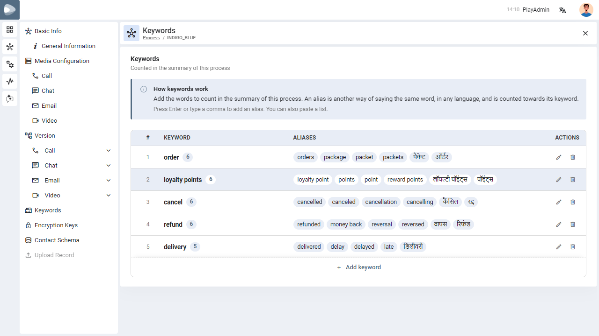

Keywords and Aliases
Tell PLAY which words matter in your conversations — and every other way people say them, in any language — so they are counted together in the recording summary.
01
What this feature does
A short primer before you add anything.
A keyword is a word or phrase you want to track, such as refund. An alias is another way of saying the same thing — money back, refunded, रिफंड. Mentions of any alias are counted towards its keyword, so one topic is not split into many small counts.
For example:
The counts appear in the Summary of each recording of the process, under Keyword Spotted (the top five are shown).

02
Where to find it
Each process has its own keywords.
Open Settings → Process, choose a process and click Keywords in the left menu. The table lists the keywords of that process: the number, the keyword with a badge showing how many aliases it has, its aliases, and the edit and delete icons.
03
Add a keyword with aliases
What to do, step by step.
-
Click Add keywordThe row at the bottom of the table opens for typing.
-
Type the keywordFor example warranty.
-
Add the aliasesClick the alias box, type an alias and press Enter (or type a comma). Repeat for every alias — guarantee, warrenty (a common misspelling), वारंटी. Each alias becomes a small chip.
-
SaveClick the Save icon at the end of the row. Click Cancel instead to throw the row away.
04
Entering aliases faster
Shortcuts in the alias box.
| To… | Do this |
|---|---|
| Add an alias | Type it and press Enter, or type a comma. |
| Add many at once | Paste a list. Commas, semicolons or new lines separate the aliases, and each becomes its own chip. |
| Remove the last alias | Press Backspace in the empty alias box. |
| Remove any alias | Click the × on its chip. |
| Use another language | Just type it — Hindi and other scripts work the same way as English. |
Text you typed but did not confirm with Enter is still added when you click Save.
05
Edit or delete a keyword
Changing what you already saved.
- Edit — click the pencil icon on the row, change the keyword or its aliases, then Save (or Cancel to go back to what was saved).
- Delete — click the bin icon. A confirmation message appears first, so nothing is removed by accident.
- Only one row can be edited at a time. While a row is open, the other edit and delete icons are greyed out with the hint Save or cancel the keyword being edited first.
06
Rules and limits
What PLAY checks when you save.
| Rule | Detail |
|---|---|
| Keywords per process | Up to 200. |
| Aliases per keyword | Up to 50. |
| Length | A keyword or an alias can be up to 100 characters. |
| Duplicates | A keyword cannot be added twice (capital letters do not matter) — you see This keyword is already added. A repeated alias on the same keyword is ignored. |
| Empty keyword | A keyword must be typed before saving — otherwise you see Enter the keyword these aliases belong to. |
| Spaces | Extra spaces are tidied automatically. |